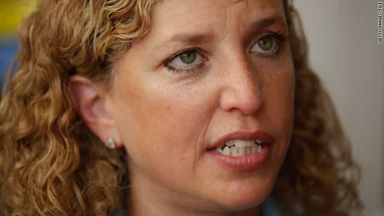
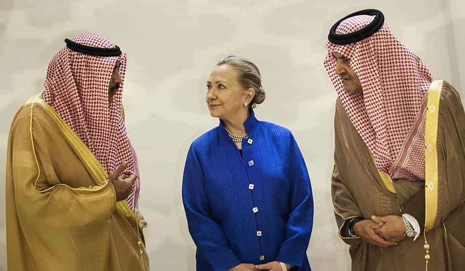
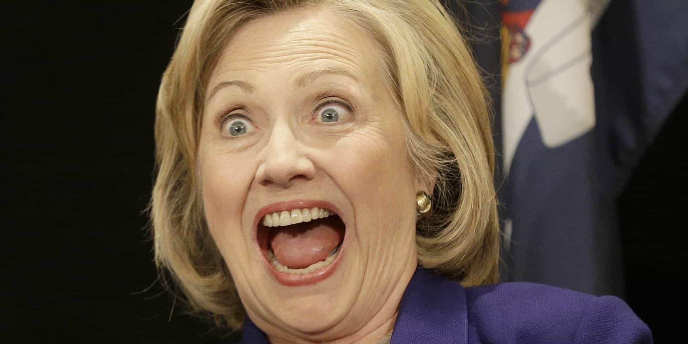

< < < Back
3 Predictions We Can Make About A Hillary Clinton Presidency From Analyzing The DNC Leaks – Return Of Kings
The Democratic National Committee email leaks shared by Wikileaks highlight the extent to which Democrat political leaders and apparatchiks have become the same ruthless, rule-breaking fat cats they normally associate with Wall Street excesses. These revelations prove that the Democrats are not so much divided and fractured, but playing a game of bully and bullied. Unless you support the dominant position of the party head honchos, you must anticipate being on the receiving end of their wrath.
All this bodes terribly in the event of a Hillary Clinton victory in 2016. Those implicated in the DNC leaks have been firmly and squarely rooting for her. As a beneficiary of rule-breaking, unjustified, and plain personal attacks on Bernie Sanders by the DNC, there is no question that Clinton will continue such behavior and reward those who partake in it. And if the undermining has been awful against Sanders, what will happen when a Clinton Administration targets Republicans or, worse still, political positions like those of the alt-right?
Here’s what we can guarantee if Hillary Clinton inhabits the Oval Office from the end of this year:
People with serious biases and conflicts of interest will be appointed to key Clinton administration positions, including to witch-hunt college men accused of rape

Debbie Wasserman Schultz.
Soon after Debbie Wasserman Schultz “resigned” her position as Chairwoman of the Democratic National Convention because of the DNC leaks, Hillary Clinton rewarded her with a new job. Wasserman Schultz will now serve as “honorary chairwoman” of Clinton’s 50-state campaign to elect Democrats.
The fallen party executive, also a sitting Congresswoman, will additionally act as a “surrogate” for Hillary’s own national Presidential campaign. All this after Wasserman Schultz and her cronies were proven to have denigrated, attacked, and outright sabotaged Bernie Sanders’ campaign to become President. Given Hillary’s support for the disgraced Wasserman Schultz, expect her to similarly bestow power on others who back her various agendas, from expelling college men accused of rape to inciting violence against the police in the name of placating Black Lives Matter.
Note the Orwellian approach to Clinton’s statement about Wasserman Schultz: “…as President, I will need fighters like Debbie in Congress who are ready on day one to get to work for the American people.” The only person Wasserman Schultz has shown any interest in going out to work or fight for, as the DNC leaks prove, is Hillary herself.
If she has been willing to undermine the rule-abiding campaign of Hillary’s rival Sanders, and show contempt for all the many party faithful supporting him, in no sense will she be capable of working or fighting for the American people, whether Democratic Party members, non-card carrying Democratic Party voters, Republican voters, or independents. Hillary’s interests are therefore being falsely conflated with the American people’s.
The word “honorary” is also telling. One does not need to hold a formal or actual executive office to serve Hillary’s interests. In fact, much of the time an unofficial representative would work best, as it allows political goals to be pursued outside normal rules, almost like how courts are being replaced by college “rape” tribunals bereft of traditional, time-honored judicial protections. There is no reason to even pay lip service to transparency, impartiality, and professionalism.
The kinds of things you will see: Professional liars like Emily Renda, who propped up rape hoaxer Jackie Coakley from the University of Virginia, will be appointed to outlandish positions like “Roaming Ambassador to Curb Male College Sexual Violence.” The existence of college rape tribunals will be expanded and given very strong force in law, to the extent that they will be given some or many more of the powers of courts without a commensurate responsibility to ensure due process.
Even the most vocal leftwing critics will be bullied into submission

Cucked.
The DNC leaks kicked Bernie Sanders in the face–again. Not that he bothered to stand up against the bias he had long suspected but could now verify. Following his kneeling down to two truly savage Black Lives Matter protestors at one of his rallies months ago, you might have said that precious little fight was ever expected from Bernie Sanders. But you would have been proven wrong. Although he did it in some respects less than he should have, Bernie by and large savaged Clinton on the points that matter. He also persisted in his campaign long after most liberal commentators had told him to stop. All that ended after some time, though.
When Bernie Sanders went largely silent some weeks ago, that was one thing. But when he first started warming to Clinton and then endorsed her, things changed for the worse. As more than one critic opined, Sanders endorsing Clinton was like Occupy Wall Street endorsing Goldman Sachs.
The spilled secrets from the DNC email leaks should have caused Bernie to disendorse Clinton. Instead, he said he was “proud to stand” with Clinton in his Democratic National Convention speech, despite knowing she had rewarded the woman who had sought to derail his campaign against party rules, Debbie Wasserman Schultz.
What was said or done to Bernie Sanders behind the scenes, particularly when the DNC leaks went public? Or, more indirectly, did he come to fear some reprisal if he fell short of emphatically endorsing his once bitter rival? After all, by supporting Clinton in the open, Sanders has effectively legitimized his biggest policy-related target of hate, the Trans-Pacific Partnership.
Even for an oddball socialist, Sanders has been resiliently disparaging of the Establishment Left for almost his entire life. His falling into line behind Clinton is seismic and speaks volumes about the pressures being brought down on non-orthodox leftist figures who try to challenge orthodox favorites.
The kinds of things you will see: Corporatist-style compacts will be made between the Clinton Administration and big business. The new Democratic ideological orthodoxy and “widespread” support for proposals like the Trans-Pacific Partnership will be ensured by silencing or plain removing raucous elements like still disgruntled Bernie Sanders backers from political debates, let alone processes. Hillary Clinton will give credence to the idea of wealth redistribution, of course, but practically-speaking advance the interests of her corporate donors.
The dubious Clinton business model will endure

“Charity” donors from the Middle East with Hillary.
The DNC email leaks demonstrate the grotesque secrecy characterizing money flowing to Hillary Clinton. Clinton’s campaign sought joint fundraising ventures with state-based affiliates of the Democratic Party, only to directly give them less than 0.5% of the total money received. Meanwhile, the email exchanges of DNC officials, including Debbie Wasserman Schultz, highlight how they desperately wanted to suppress these kinds of damaging details. Of any of the questions Wasserman Schultz should answer, ones about Hillary’s financing efforts are the most urgent.
Combine this with longstanding doubts about the Clinton Foundation and you have what should be an automatic trigger for serious investigations. The Clinton Foundation has allegedly received over $100 million in donations from members of authoritarian governments from across the Persian Gulf in the Middle East, scuttling any image that Clinton could serve impartially as Secretary of State and can serve impartially as President. Other problems raised by concerned commentators are the poor dollar returns on the charity’s ventures to help the needy, with inordinate sums being paid for “administrative costs” and the salaries of executives.
Plus, Hillary and Bill Clinton have amassed a mind-boggling fortune north of $150 million just from their speaking engagements over the last 15 years. It is very arguable that the great rump of these speeches have made them financially beholden to the same Wall Street and other big business institutions Hillary claims she will successfully hold in check. The active collaboration of DNC officials in suppressing information about the financial details of Hillary Clinton’s campaign gives us no indication that the Democratic political class will ever question how and in what circumstances the Clintons earn or raise their money.
The kinds of things you will see: Criticisms of the funding arrangements behind Hillary’s political campaign and the financial situation of the Clinton Foundation will be swatted away like flies. Those who call for anything close to an inquiry, even informally, will be severely punished and blacklisted.
We’re in for a wild, not so happy ride

This photo is about 1% as crazy as any Hillary Clinton Presidency will be.
The cat is supposedly out of the bag. Poll numbers may have dipped for Hillary, but a Trump victory is by no means certain. Hillary’s prospects are on the whole probably still better than The Donald’s. This gives us all the more reason to ensure that Trump is supported to the hilt and that the skulduggery of Hillary and her DNC enablers continues to be exposed.
Between now and November, though, you should remain fearful. We have a lot to lose if Hillary wins. The Culture War is being waged like never before.
 If you like this article and are concerned about the future of the Western world, check out Roosh's book Free Speech Isn't Free. It gives an inside look to how the globalist establishment is attempting to marginalize masculine men with a leftist agenda that promotes censorship, feminism, and sterility. It also shares key knowledge and tools that you can use to defend yourself against social justice attacks. Click here to learn more about the book. Your support will help maintain our operation.
If you like this article and are concerned about the future of the Western world, check out Roosh's book Free Speech Isn't Free. It gives an inside look to how the globalist establishment is attempting to marginalize masculine men with a leftist agenda that promotes censorship, feminism, and sterility. It also shares key knowledge and tools that you can use to defend yourself against social justice attacks. Click here to learn more about the book. Your support will help maintain our operation.
Read More: Why A Hillary Clinton Presidency Would Destroy The United States